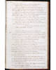
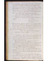
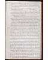
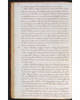
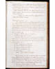
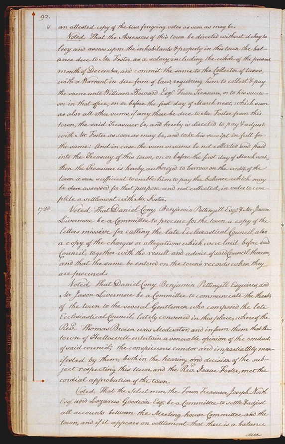

The Official Story
Chapter 5
Foster is dismissed
Reading the Hallowell town records from early September of 1788, we find out that Foster's relations with the town had deteriorated to the point where he was officially writing the town's officers, offering to sever his connections with the town if they would pay him 200 pounds -- double the amount of his annual salary. The town turned him down, leaving the issue uncomfortably unresolved.Finally , as you can see in the town records from October 30, the town decided to convene a church council in November "to hear, judge, and advise in all matters of grievances." Foster agreed.
There is no official record of the charges presented against Foster at the November church council.
| There are hints, however, in the entries Martha wrote after attending the church council meeting. |
We know from Hallowell's December town records that the church council recommended dismissing Foster, that Foster insisted the town pay him the 200 pounds he requested or make a counteroffer, and that the town rejected his request. Foster was then officially dismissed at that meeting by a vote of 84 to 9: "whereas the Rev. Isaac Foseter both by his principles and behavior has given just ground in the opinion of this town for uneasiness and complaint againt him....the town of Hallowell, in legal town meeting assembled, do therefore...grant the said Rev. Isaac Foster a dismission from his pastoral office."
Take note of the terms of the dismissal, for they are unusually severe: the church sexton was directed not only to forbid Isaac Foster from preaching in the meeting house but also to forbid him from setting foot in the meeting house.

| previous |
More suits and countersuits | |
| next |
Although Foster didn't set foot in the meeting house, he did stay in town, haggling over the terms of his dismissal. |
| Hallowell Town Records (Transcription by John Sewall) Town of Hallowell Officials |
View Text View Frames version |
| 89 ( |
90 ( |
91 ( |
92 ( |
93 ( |
 |
 |
 |
 |
 |
|
|
folio 92 ( |
|
|
 |
||
|
|
|
|